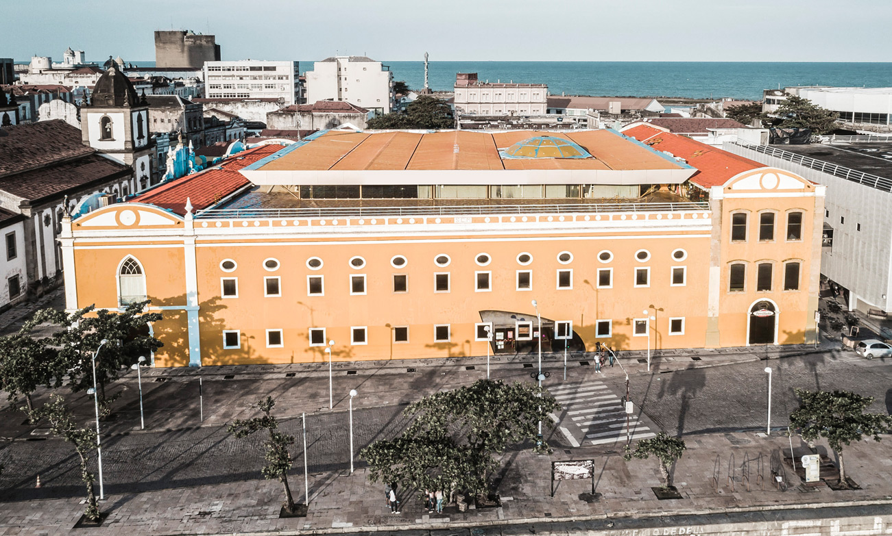

Shopping Paço Alfândega
O ‘Paço’, como é chamado pelos recifenses, é um centro comercial que funciona num bonito prédio de 1732. O antigo Convento de São Filipe Néri passou a funcionar como Anfândega de Recife. Por isso o nome do Shopping.
Muito da antiga construção está preservado, e por isso o prédio é tão bonito. A decoração de pisos e paredes é inspirada na Arte Armorial. Para quem não conhece, essa é uma corrente artística que busca criar arte erudita a partir de elementos da cultura popular do Nordeste Brasileiro. Um trabalho muito bonito e característico de Recife.